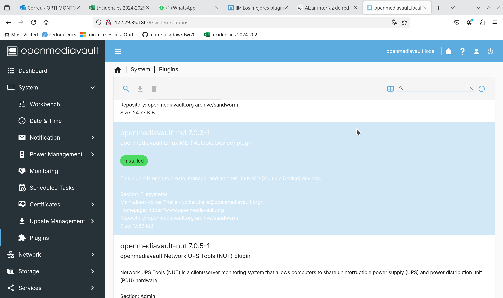

Servidor NAS
Pràctica: Configuració i securització de Server NAS
Pots trobar una guia dels aspectes de configuració essencials per a versiona antigues en aquest tutorial.
http://somebooks.es/crea-tu-propio-nas-con-openmediavault-parte-1/
http://somebooks.es/crea-tu-propio-nas-con-openmediavault-parte-2/
Instal·lació
-
Prepara una màquina virtual que a més a més del disc principal tinga 3 discs del mateix tamany per a implementar un
RAID-5posteriorment. -
Baixa la ISO de Openmediavault i realitza la instal·lació en la teua màquina virtual
Login consola
Per a fer login en el mode consola has d'utilitzar l'usuari root
Possibles problemes
-
Pot ser que no es reconega l'adaptador de Xarxa que t'haja assignat Virtualbox, prova a utilitzar altre, per exemple
PCnet-FASTIII. -
Si no visualitzes la IP en la consola després d'arrancar, has d'alçar la targeta de xarxa manualment (problemes que ocorren en versions virtualitzades)
| Bash | |
|---|---|
I tornar a demanar IP...
| Bash | |
|---|---|
Configuració
Navegador
La gestió del sistema es realitza des del navegador.
Pluggin per a RAID
Les últimes versions del sistema requereixen que instal·leu aquest pluggin per a poder realitzar la funció de RAID

En classe s'han vist les següents accions de securització.
-
Habilitar connexió d'administració https
-
Habilitar FTP segur
-
Generar certificats del domini i per a ssh
-
Creació d'un RAID-5
-
Habilitar serveis SMB/CIFS
-
Creació d'usuaris
-
Habilitació de quotes de disc
Crea un sistema de còpies de seguretat automatitzat en alguna màquina virtual o en l'ordinador anfitrió per a que realitze les còpies en el NAS que has creat.
Pluggins
Instal·la també algun codi per a poder tindre un navegador d'arxius...